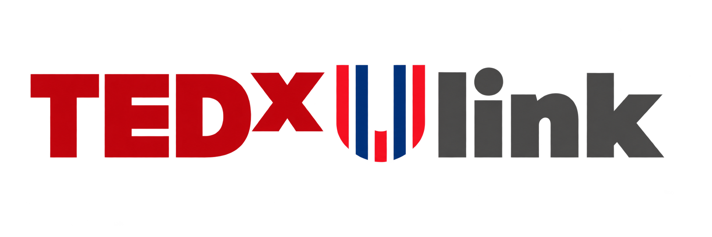

Find your idea
以清晰、原创的核心观点为起点，不只是故事堆砌。选题自由，也可以从下方参考选题中寻找灵感。

成为演讲者 ↗带上你的观点，我们一起把它打磨成一场演讲。
以清晰、原创的核心观点为起点，不只是故事堆砌。选题自由，也可以从下方参考选题中寻找灵感。
录制约 8–10 分钟的英文演讲视频。本人出镜，穿校服，横屏拍摄，采用半身或全身站姿；背景整洁、声音清晰，不要全程读稿。
点击下方按钮或使用钉钉扫码，在截止前填写报名表。筛选结果将于 10 月 23 日公布；入选后需参与内容打磨、演讲辅导与彩排。
还没有确定选题？可以从组委会提供的这些问题开始。这些仅供参考，并非限定主题；我们同样欢迎你自己的原创观点。
值得传播的观点，可以来自学术探索、跨学科思考、社会观察，也可以源于一次改变你看待世界方式的个人经历。
TEDxUlink 2026 面向全体同学开放演讲者招募。本次活动不限定选题，我们期待清晰、原创的核心观点，启发更多人换一种视角思考世界。
关于报名、选题或活动安排，欢迎直接联系以下负责人。
具有原创性、能够启发思考的观点，可以来自学术、科技、个人成长或社会观察。活动不限定选题；请避免商业推广及招募通知中列明的敏感议题。
报名视频为约 8–10 分钟的英文演讲；正式舞台演讲时长为 10–12 分钟。具体拍摄要求请查看招募通知。
英语组导师将全程辅导。演讲者需要配合团队，参与多轮内容打磨、演讲辅导与现场彩排。
筛选结果将于 2026 年 10 月 23 日公布。活动日期为 2026 年 12 月 9 日，具体开场时间待公布。活动倒计时以当日 00:00（北京时间）为基准。
New Era. New Youth.
2026.12.09 · TEDxUlink